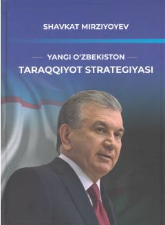

YOYangi Oʻzbekistonni rivojlantirish strategiyasi va ustuvor yoʻnalishlariga bagʻishlangan muhim asar.
Ushbu kitobda Yangi Oʻzbekistonni va Uchinchi Renessans poydevorini barpo etish borasidagi tub oʻzgarishlar, islohotlarning maqsadi, mazmun-mohiyati hamda ustuvor yoʻnalishlari haqida so‘z boradi. Kitobda mamlakatimizni yangi rivojlanish bosqichiga koʻtarish uchun belgilab olingan strategik yoʻl va milliy taraqqiyot istiqbollari atroflicha yoritilgan.